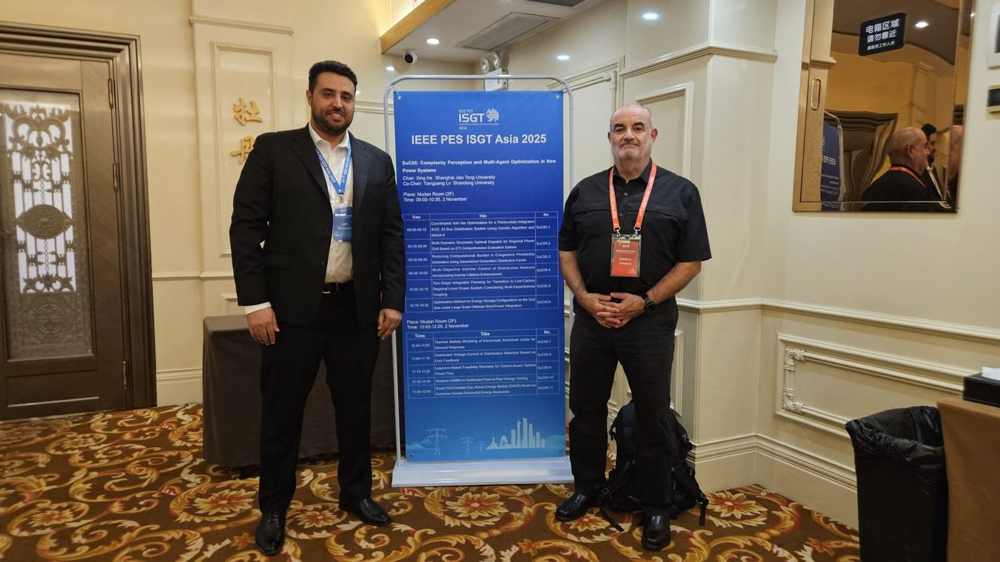
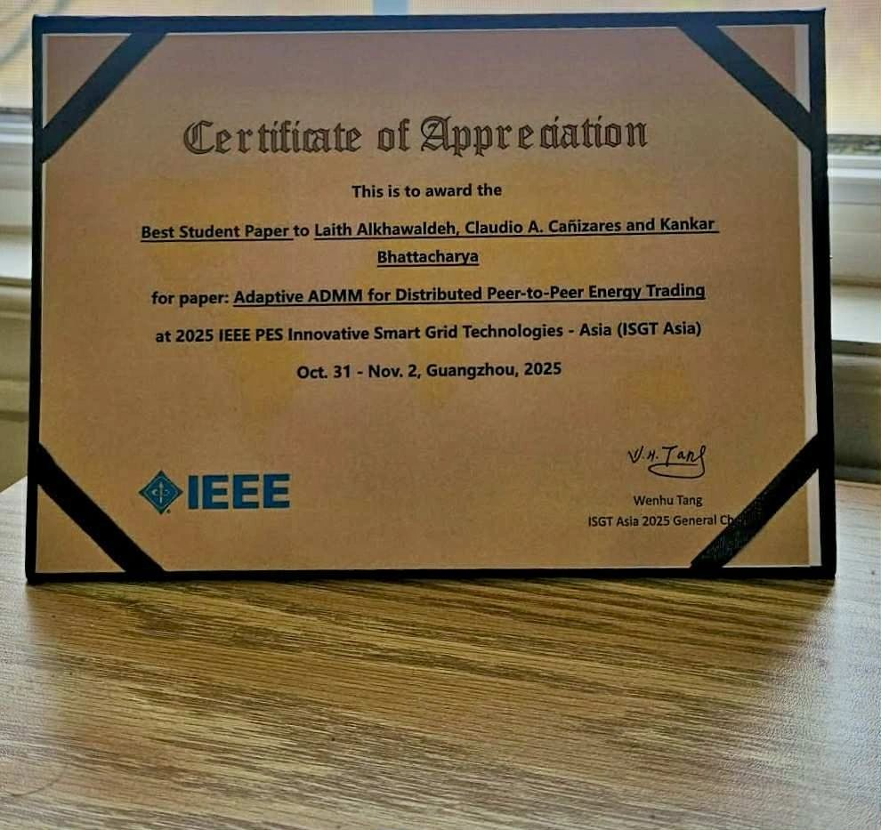

What the work does
-
Trades in real time
Schedules are re-optimized every five minutes, so trading follows actual sunshine and demand instead of a day-old forecast.
-
Keeps the grid safe
Each trade is checked against voltage and cable limits on standard 15-, 33- and 141-bus distribution feeders, and the model is validated with full AC power flow.
-
No central controller needed
Homes solve their own problem and agree on trades through a distributed method (ADMM) that tunes itself to converge quickly.
-
Settles trades on a blockchain
Smart contracts record each trade, compare it with the meter reading, and pay or penalize automatically.
From power electronics to smart grids
Hands-on hardware and industry work came first; it shapes how I think about what a real grid can do.
- 2014BSc, Electrical Power EngineeringTafila Technical University, Jordan. Ranked first in class.
- 2015 to 2019Laboratory InstructorAl-Hussein Bin Talal University, Jordan.
- 2019 to 2022MASc (2021) and researchOntario Tech University. EV chargers and solar inverters.
- 2022 to 2023Electrical Services Technician LeadAlstom, Toronto. Finch West LRT train testing.
- Now, finishing 2027PhD, Electrical and Computer EngineeringUniversity of Waterloo. Peer-to-peer energy trading.
Recognition
Best Student Paper Award, IEEE PES ISGT Asia 2025, Guangzhou, China, for Adaptive ADMM for Distributed Peer-to-Peer Energy Trading, with Prof. Claudio Cañizares and Prof. Kankar Bhattacharya. Read the University of Waterloo news story


- Graduate scholarship from Al-Hussein Bin Talal University, Jordan, for PhD studies at the University of Waterloo.
- Ranked first among graduating students in Electrical Power Engineering, Tafila Technical University, 2014.
University service
Elected graduate student senator on the University of Waterloo Senate, current term ending August 31, 2027. In 2025–2026 I also sat on the Senate Planning and Finance Committee and took part in joint meetings of the Board of Governors and Senate.